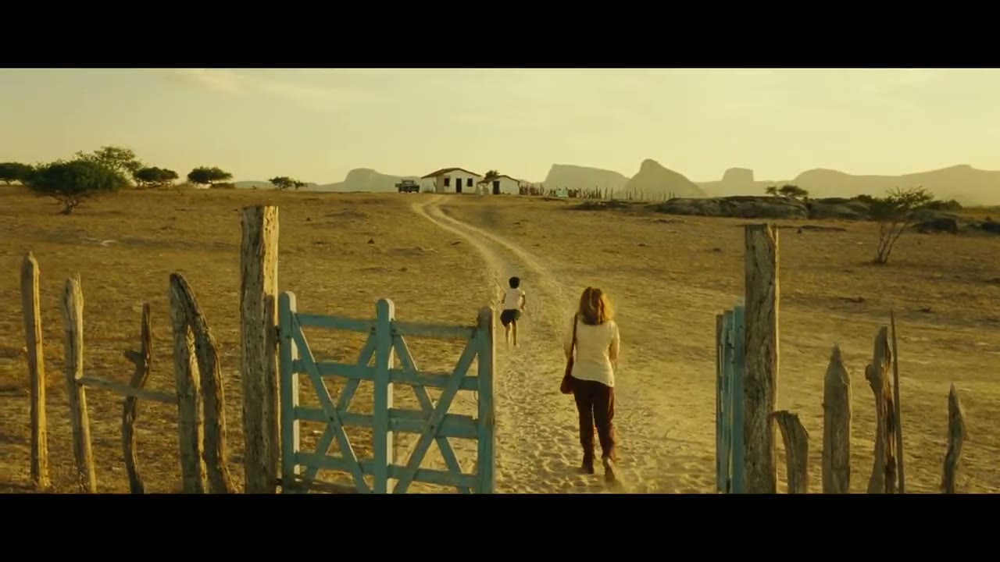
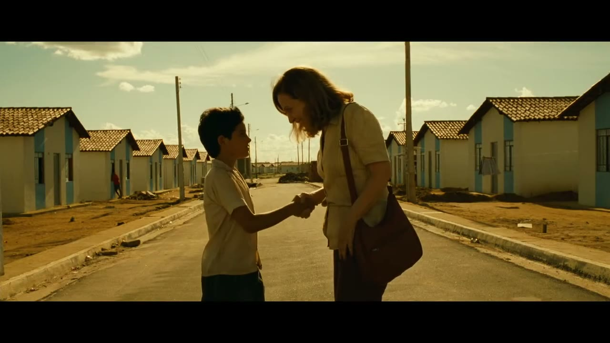
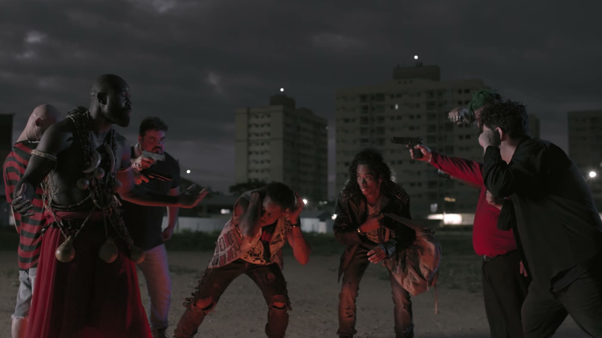
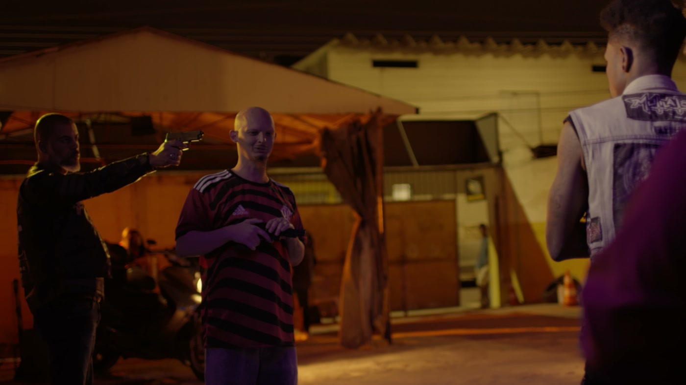
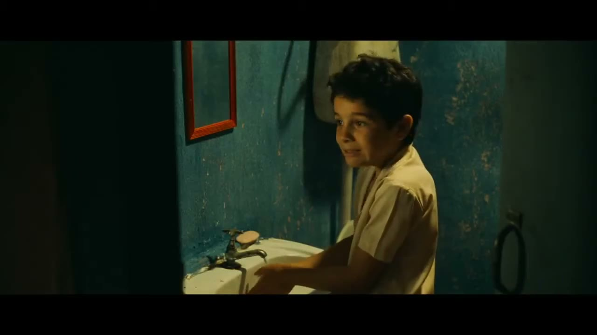
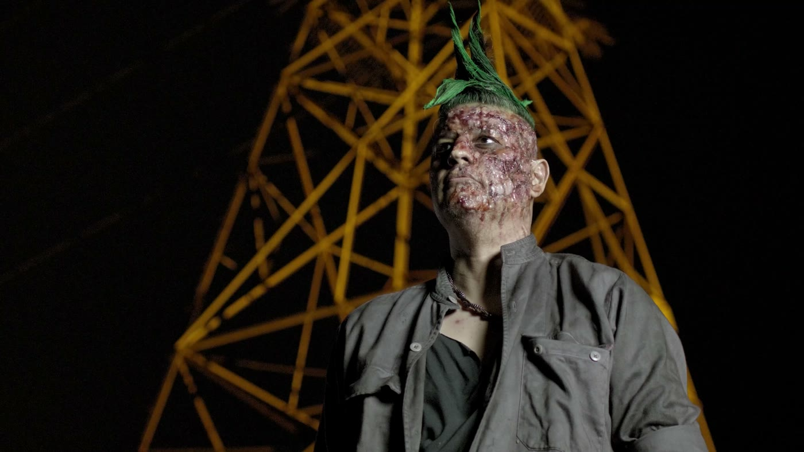
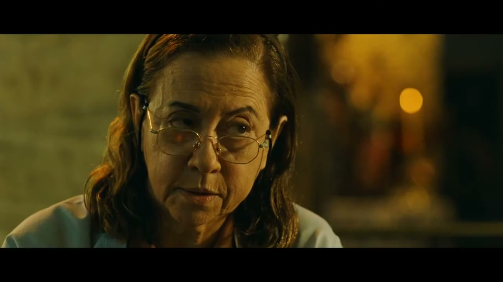
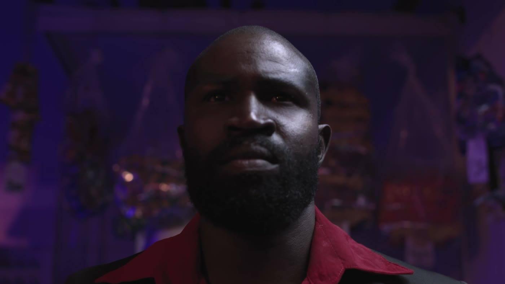
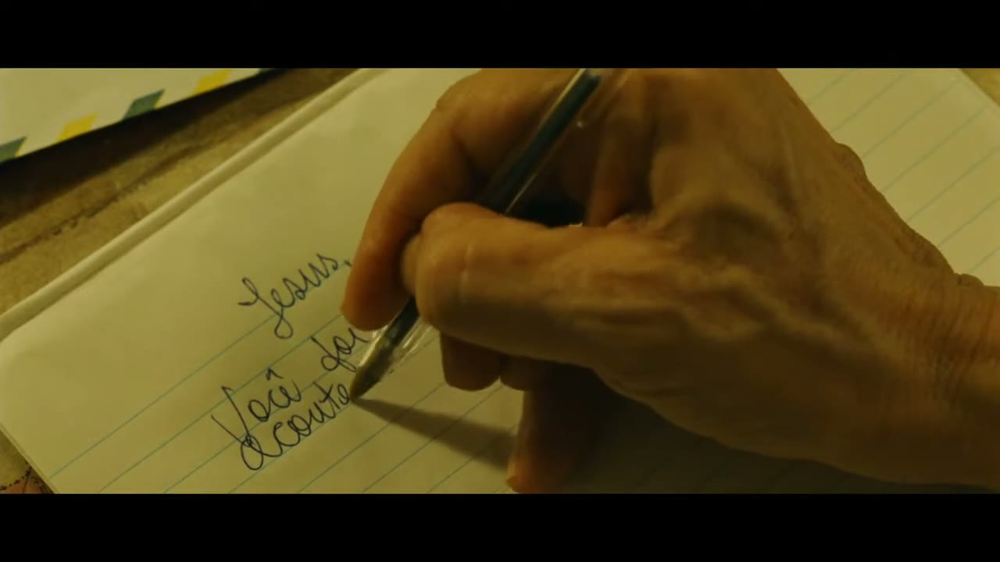
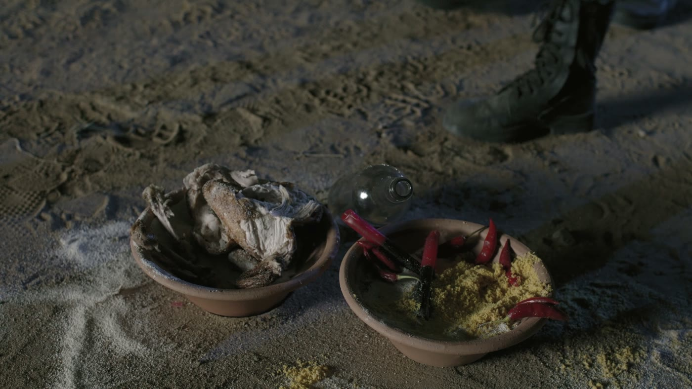

Um controle só da câmera: o quanto do assunto cabe no quadro
SEIS JEITOS DE OLHAR A MESMA PESSOA
PG
PLANO GERAL
PC
PLANO CONJUNTO
PA
PLANO AMERICANO
PM
PLANO MÉDIO
PP
PRIMEIRO PLANO
PD
PLANO DETALHE
Mesma pessoa, mesmo lugar, mesma luz, mesma roupa. Só mudou o quanto dela cabe no quadro. Hoje a gente mexe só nessa régua. Os outros controles chegam nos próximos encontros.
PG
PLANO GERAL
O lugar é o assunto. Se tiver gente, ela é pequena.
01 · O ESQUEMA
A régua, sem distração
02 · CENTRAL DO BRASIL

Walter Salles, 1998
03 · ENCRUZILHADAS DO CAOS
O primeiro plano do filme, antes de qualquer pessoa
O QUE ELE FAZSitua e mede. Diz onde a cena acontece e qual o tamanho de quem está ali dentro. Às vezes nem tem ninguém: aí ele apresenta o mundo antes de apresentar as pessoas.
PC
PLANO CONJUNTO
Gente o bastante no quadro pra dar pra ler o que fazem e como se relacionam.
01 · O ESQUEMA
Os três no mesmo quadro, com o espaço entre eles visível
02 · CENTRAL DO BRASIL

A rua entre as casas conta tanto quanto os dois
03 · ENCRUZILHADAS DO CAOS

Seis pessoas, e a posição de cada uma já conta a cena
O QUE ELE FAZMostra a ação e a relação. É o plano em que a distância entre as pessoas vira informação: quem está perto de quem, quem avança, quem recua.
PA
PLANO AMERICANO
Corta acima do joelho. Nasceu no faroeste, pra caber o rosto e o coldre no mesmo quadro.
01 · O ESQUEMA
O corte no joelho
02 · CENTRAL DO BRASIL
NÃO TEM
E esse é o único degrau da escada
que a gente nunca achou aqui
que a gente nunca achou aqui
Drama intimista vive de rosto e de paisagem
03 · ENCRUZILHADAS DO CAOS

Corta na coxa: cabe o rosto e cabe a arma, no mesmo quadro
O QUE ELE FAZDá postura e domínio. A pessoa ocupa o quadro de pé, inteira o bastante pra impor presença. É o plano do confronto e da atitude.
Repara no nome. Quem batizou foram os franceses, olhando o cinema dos Estados Unidos entre 1910 e 1940. Em inglês não existe "American shot": lá se diz cowboy shot, ou o termo neutro medium long shot. E os dois nem cortam no mesmo lugar, um na coxa e outro no joelho. É o único plano da escada com nacionalidade no nome, e o apelido veio de fora.
PM
PLANO MÉDIO
Corta na cintura. O mais neutro dos seis, e por isso o mais usado.
01 · O ESQUEMA
O corte na cintura
02 · CENTRAL DO BRASIL

Da cintura pra cima, e ainda dá pra ver o quarto em volta
03 · ENCRUZILHADAS DO CAOS

Corpo até a cintura, com a torre atrás situando o lugar
O QUE ELE FAZÉ o plano da conversa. Fica na distância em que a gente costuma olhar alguém falando com a gente, e por isso quase desaparece.
PP
PRIMEIRO PLANO
Só o rosto. Não tem pra onde fugir, nem pra quem filma nem pra quem é filmado.
01 · O ESQUEMA
Cabeça e ombros
02 · CENTRAL DO BRASIL

Fernanda Montenegro. Foi esse plano que foi ao Oscar
03 · ENCRUZILHADAS DO CAOS

O rosto decide sozinho o que a cena é
O QUE ELE FAZTira o mundo e deixa o sentimento. Sem contexto pra fugir, quem assiste é obrigado a lidar com o que está no rosto.
PD
PLANO DETALHE
Uma parte só. O objeto vira o assunto da cena inteira.
01 · O ESQUEMA
Uma parte, e nada além dela
02 · CENTRAL DO BRASIL

A mão escrevendo a carta. A premissa do filme inteiro cabe aqui
03 · ENCRUZILHADAS DO CAOS

A oferenda. O plano mais fechado é o mais carregado
O QUE ELE FAZAponta o dedo. Diz "isso aqui importa" e cria expectativa, porque esconde tudo que está em volta.
● Rodando
VAI
20:00
CLIQUE NO NÚMERO PARA COMEÇAR
PG
PLANO GERAL
PC
PLANO CONJUNTO
PA
PLANO AMERICANO
PM
PLANO MÉDIO
PP
PRIMEIRO PLANO
PD
PLANO DETALHE
DEZ FRASES · SEIS PLANOS · CLAQUETE COM OS DEDOS